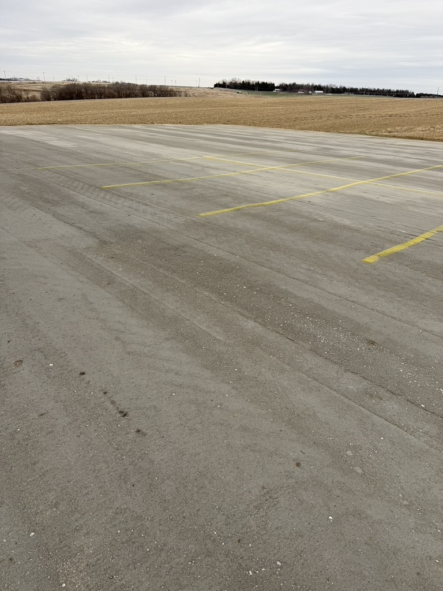
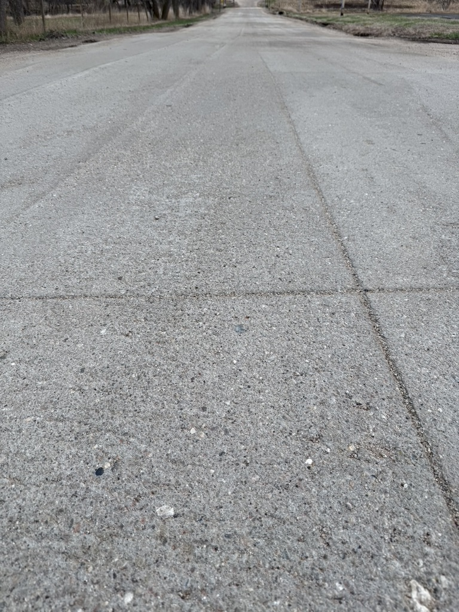

Long-lasting pavement solutions for streets, roads, shoulders and public works applications.
Discuss a Municipal Project →Rock Solid RCC works with municipalities, engineers and construction managers on roadway and public works applications where durability, schedule and lifecycle value matter. RCC can also provide an economical path for upgrading gravel roads and failing asphalt streets, creating a durable concrete pavement surface without the cost and disruption of a full traditional concrete reconstruction.
We coordinate with project teams on mix requirements, sequencing and construction logistics. For phased work, we can help plan installation around budget cycles and access needs.



Send the project location, approximate scope and timeline.
Request a Proposal Review →